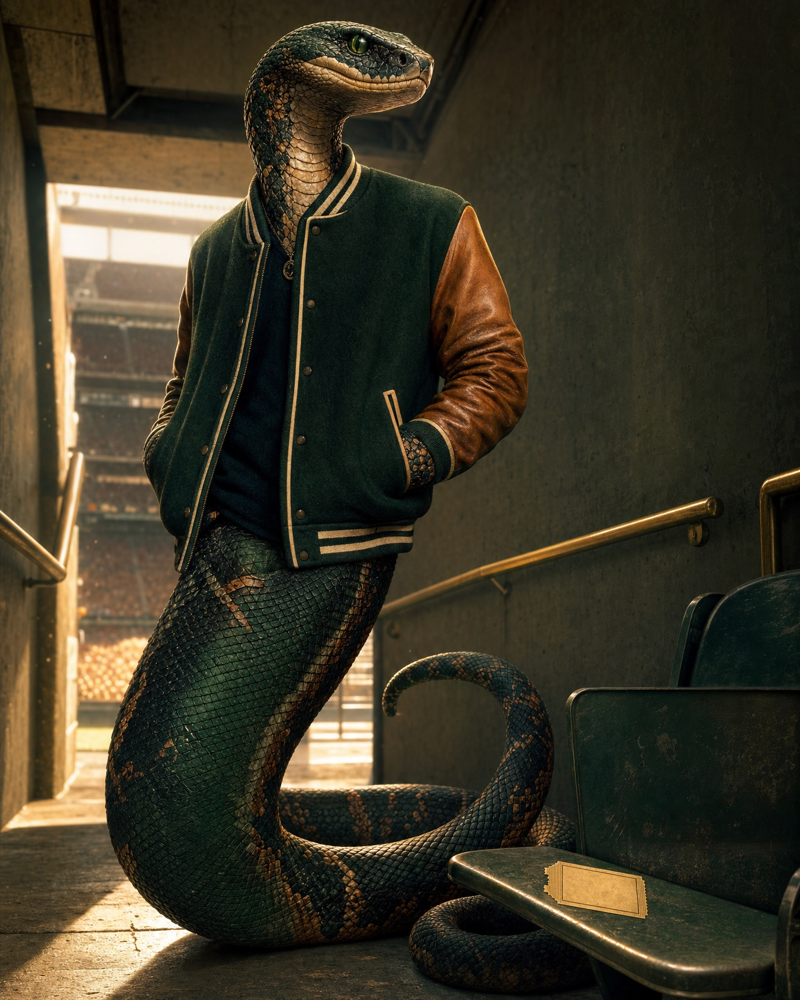

Exhibit A Tradition
1887→FOREVER
FAMU describes its traditions as the bridge between past, present, and future—and the Rattler as a symbol of tenacity.
Read the official traditions
The unofficial Rattler Lifers project
Thirty years after graduation, we still plan fall around the games. We still find each other in every city. We still come back to the Hill like we never left.
The belief
Call it what you want.
The joke lands because the attachment is undeniable.
Rattlers graduate, move away, build careers, raise families—and still organize life around games, Homecoming, the Set, the Marching 100, alumni chapters, mentoring, recruiting, giving, and coming back.
“And if it is?” is not a defense of anything harmful. It is a playful refusal to apologize for healthy, lifelong belonging.
“I graduated almost thirty years ago and still go to every game.”
The exhibits
Not empty hype. A sourced story of continuity, excellence, service, and the Rattlers who keep showing up.
FAMU describes its traditions as the bridge between past, present, and future—and the Rattler as a symbol of tenacity.
Read the official traditionsOnce.
The National Alumni Association turns that lifelong tie into giving, recruiting, advocacy, and service.
Meet the alumni networkFAMU identifies itself as the nation’s number-one public HBCU and puts students and alumni at the center of the proof.
Current claim retrieved August 19, 2026.
Verify at FAMU.eduAlumni Affairs exists to keep every alumnus connected, engaged, and giving back. The return is not nostalgia. It is infrastructure.
Connect officially
Character branding
Meet
Not the official mascot. Not a copy. The Lifer is the Rattler spirit who never really left.
Rattler roll call
Drop your year and the one thing that still brings you back. Build a shareable Rattler roll call without surrendering your story to a database—your entry stays on this device unless you choose to share it.
Pride with a purpose
The social system
One belief.
Endless proof.
A visual language that can carry launch posts, memories, roll calls, history, game days, alumni impact, and purposeful action without turning into generic green-and-orange flyers.
THE QUESTION THEY KEEP ASKING
And if it is?
SIGHTING NO. 001
PACKED.
STILL.
AT EVERY
GAME.
Some school spirit has an expiration date. Ours missed the memo.
These are working HTML layouts, not flattened mockups. Open card 01 · Open card 02 · Open card 03